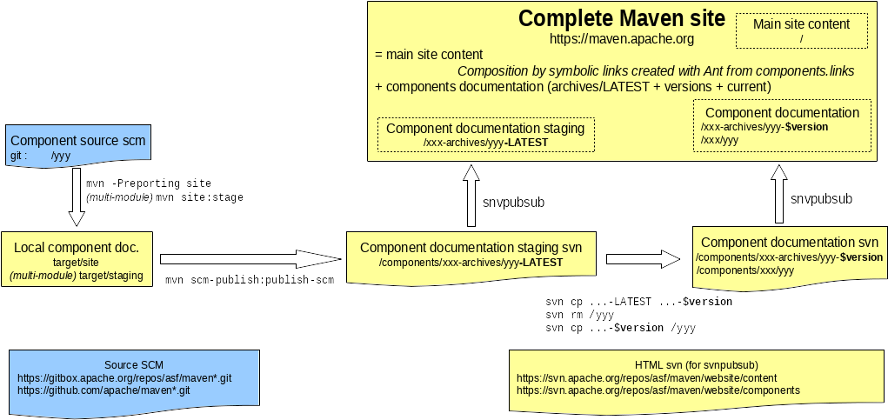

Introduction
This document gives step-by-step instructions for deploying Maven components reference documentation inside the Maven https://maven.apache.org/ website.
See Maven website introduction for instructions on the whole website publication (main site content + components).
Overview
Since December 2012, the overall website uses svnpubsub mechanism:

How components reference documentation publication works
Components don't use CMS: components reference documentation are versioned and generated from full sources, with both handwritten content (like Maven main site) and content generated from sources (javadoc, unit-test results, integration test results...).
Staging component reference documentation
Reference documentation of a component is staged in https://maven.apache.org/xxx-archives/yyy-LATEST/, where yyy is the component name and xxx can be:
- the component type, like
shared,plugins,skins, ... (see /shared-archives/, /plugins-archives/, /pom-archives/, /skins-archives/) - the component name for standalone components, like
archetype,plugin-tools,surefire,wagon, ... (see /archetype-archives/, /archetypes-archives/, /plugin-tools-archives/, /scm-archives/, /surefire-archives/, /wagon-archives/)
To publish component reference documentation:
-
prerequisite: eventually build the component if it has not been done previously, or some reports may miss build or integration information:
Notice: In cases where you have prepared a release you can simple change into
target/checkoutdirectory and continue with 2.mvn -Prun-its install -
build the reference documentation:
mvn -Preporting site site:stageNotice:
site:stageis really necessary only for multi-modules components, but added unconditionally in these instructions to keep them as straightforward as possible. -
stage the reference documentation to website production svn area, using maven-scm-publish-plugin: (TODO: explanations on configuration in pom to yyy-LATEST)
mvn scm-publish:publish-scmsvnpubsub mechanism transfers svn production content to live production site
Notice: content is in fact published to /components/ directory, and symbolic links declared in resources/**/components.links in main site source are used by Ant to create a reference from /xxx (= what we want to be user-visible) to /components/xxx (what is checked out).
Publishing versioned component reference documentation
When doing a release, yyy-LATEST content staged in previous section needs:
- to be archived to versioned directory before a newer revision is published into -LATEST,
- to replace the actual component reference documentation.
This is done with operations on website production svn area: you can use Component Reference Documentation Helper to easily prepare svnmucc command line.
If you prefer to do everything by hand from command templates, you can do either with svn command:
-
Unix:
SVNPUBSUB=https://svn.apache.org/repos/asf/maven/website/components svn cp $SVNPUBSUB/xxx-archives/yyy-LATEST $SVNPUBSUB/xxx-archives/yyy-$version -m "Archive versioned site." svn rm $SVNPUBSUB/xxx/yyy -m "Remove old site." svn cp $SVNPUBSUB/xxx-archives/yyy-$version $SVNPUBSUB/xxx/yyy -m "Publish new site." -
Windows:
set SVNPUBSUB=https://svn.apache.org/repos/asf/maven/website/components svn cp %SVNPUBSUB%/xxx-archives/yyy-LATEST %SVNPUBSUB%/xxx-archives/yyy-$version -m "Archive versioned site." svn rm %SVNPUBSUB%/xxx/yyy -m "Remove old site." svn cp %SVNPUBSUB%/xxx-archives/yyy-$version %SVNPUBSUB%/xxx/yyy -m "Publish new site."
or with svnmucc command:
svnmucc -m "Publish yyy $version documentation" \
-U https://svn.apache.org/repos/asf/maven/website/components \
cp HEAD xxx-archives/yyy-LATEST xxx-archives/yyy-$version \
rm xxx/yyy \
cp HEAD xxx-archives/yyy-LATEST xxx/yyy
When using Windows, replace the \ with ^ to ensure correct multiline command execution.
Updating index page in the Maven site
Some component types have an index page refering to each component of the same type. This is the case for plugins (see index), shared (see index), poms (see index) and skins (see index).
Update the version number and release date for the component in the content/apt/xxx/index.apt page.
See Deploy Maven website for more in-depth instructions on main site content editing.
Notice: if you forget about updating the index page, dist-tool has a report run daily that will gently send a failure notification on notifications@maven.a.o when "Check Errors" report is not empty.